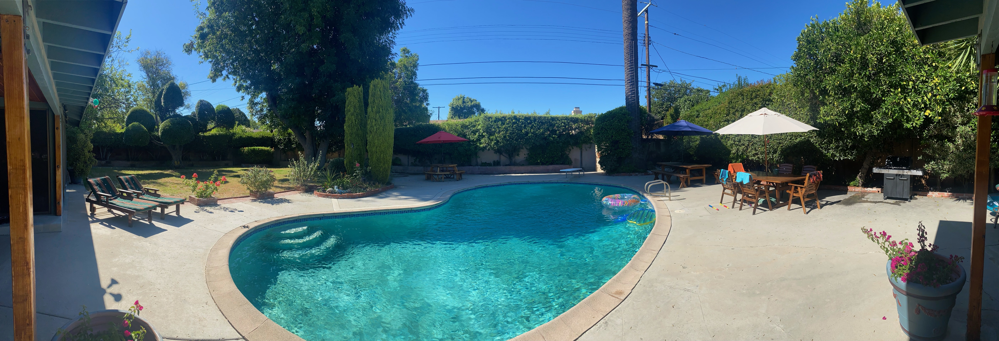
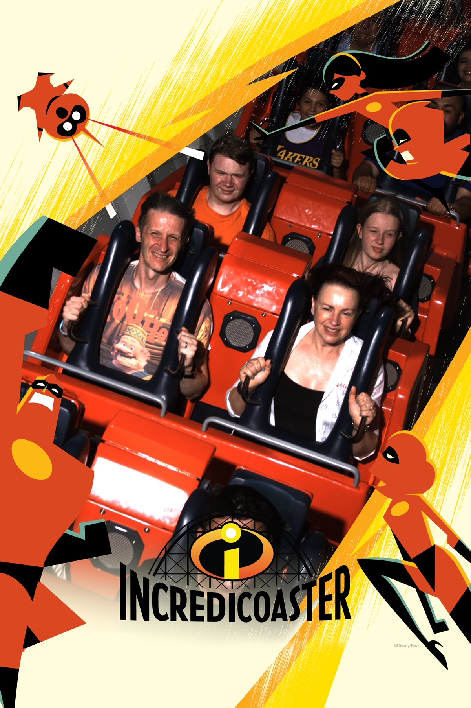
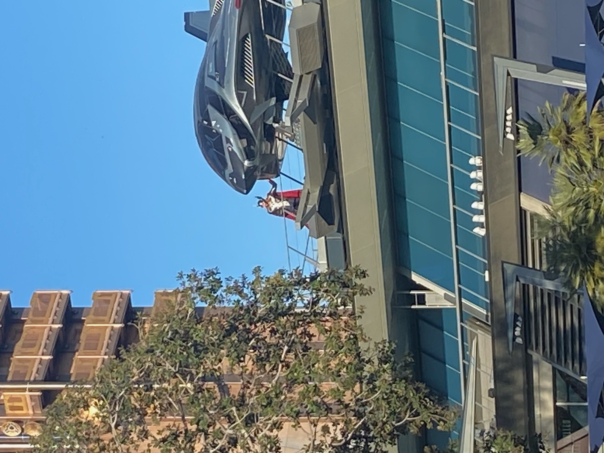
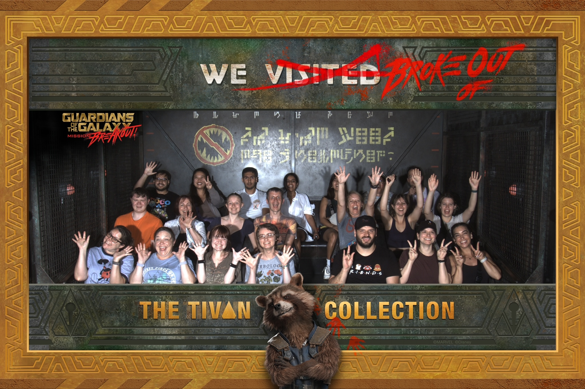
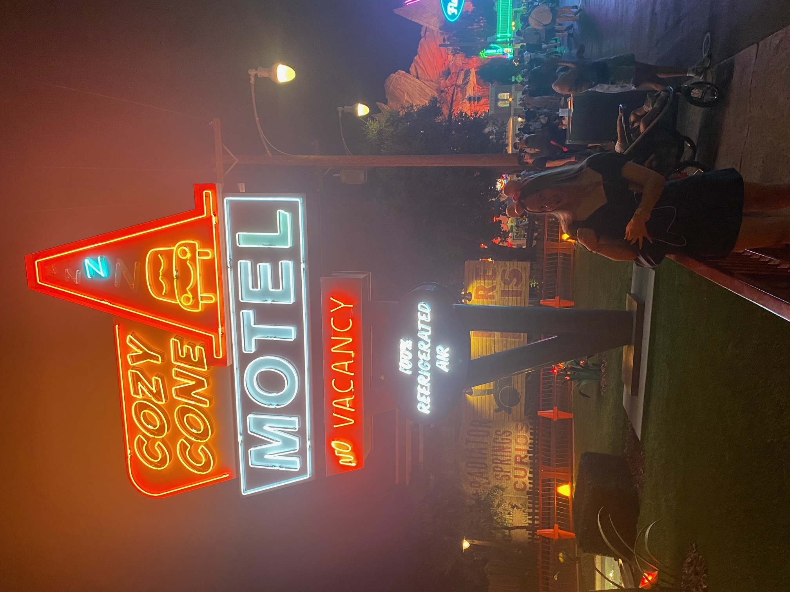
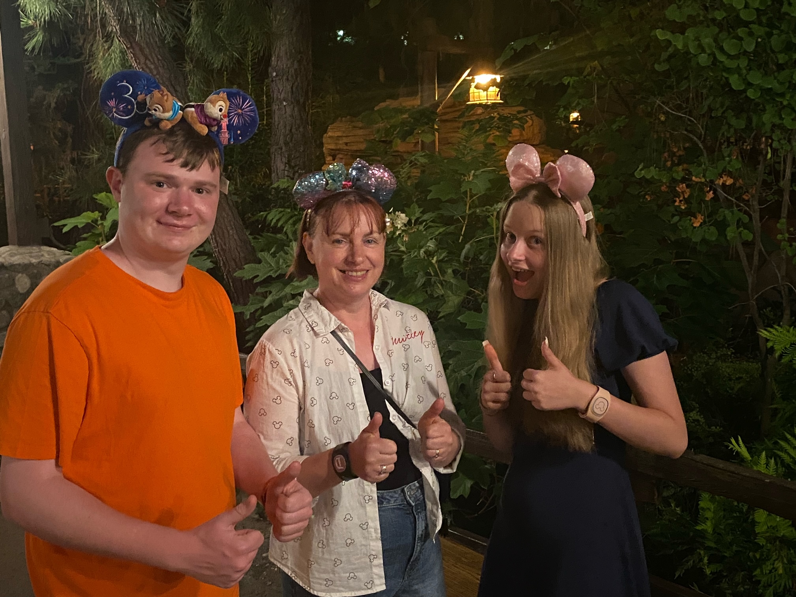
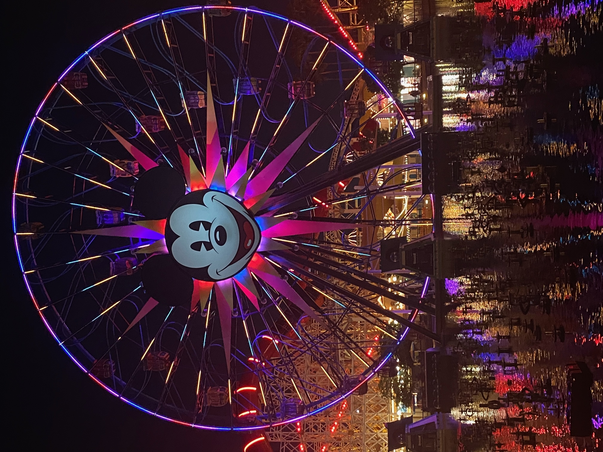

Today marked our transition from mornings to evenings, so we had a chilled morning, with some time for omissions and some pictures of the ranch.
Yesterday evening, load music could be heard from outside. Alison spotted that it was coming from a garage band across the street. Freya said she thought she was living in a US TV show and was excited at the prospect of a hot boy band. She went to have a look. Maybe they had been a hot boy band 30 years ago!
Various hits over many decades were murdered by the band. The most cringy was Under Pressure, where the vocals must have made David Bowie turn in his grave but even worse was the bassist’s random timing that would have made the otherwise calm John Deacon want to smash the guitar to save the Los Angeles area from further rhythmic horrors.
Our ranch is very nice, with a big living space and enormous outdoor space. It has its own hot tub, but it’s too hot for that it in the day time. The pool is not heated but the air is so hot that it doesn’t matter. The diving board is a surprising addition in this litigious country.

The owner is very keen for guests not to make noise and have big parties as it upsets his neighbours. There are strict rules on guests and timing for music. Perhaps if that was his genuine concern he shouldn’t have seats for 24 people outside and a bar area inside. Hmmm.
We chilled around the pool in the morning, with Jake actually getting in and having a swim. We either ate early or packed a lunch for the car. The drive to Disney took ages, with the freeway very busy most of the way (I thought Hollywood was on strike - perhaps not everyone is an actor or writer) but standard efficient Disney arrival got us to the California Adventure Park. Our first job was to reserve a good spot for the night show - more of that later.
We decided to start the day with the Incredicoaster, a proper coaster ride in the Pixar Pier. We marvelled at the queue management and the efficiency of loading. They must be getting through at least 20 times as many people as our first coaster at Three Flags. The ride itself was excellent with a smooth fast start and smooth ups, downs, rounds and a loop. Very pleasant. We all agreed we’d had more fun in the first hour at Disney, with the overall look, feel, theming, staff, queue and ride than we had at Three Flags.

Next ride was the weird swinger big wheel. I can’t explain it, but you could watch this https://youtu.be/GD6COUCB3xc . Freya sensibly left the queue as it was her worst nightmare. I needed to dash to some aircon straight after to avoid throwing up. Very clever. Glad we rode it. Never again!
Snacks were needed. Freya had her first non-tomato veg of the holiday of corn-on-the cob, while the rest of us had frozen sugary treats. We ate these in the queue for the Little Mermaid, which moved a bit too quick, so we got on the ride with a big mouthful of frozen lemonade. Great ride, just like Orlando, and nicely cool.
We joined the queue for Goofy’s Sky School, but it broke before we got on. The queue controller provided some entertainment by trying to get the crowd to join in with Sweet Caroline. He sang la-la-la through the verse, knew “Sweet Caroline” and not a single other word. He also tried to get us to speak to people next to us in the queue. Urgh.
Alison and Freya went on a swing ride while me and Jake explored Avengers Campus. The Avengers area is very good, but after being immersed in Galaxy’s Edge, it isn’t quite amazing.

The girls joined us for Guardians of the Galaxy, which is retheme of Tower of Terror. In the daylight, the retheme just looks like someone stuck on some Avengers bits to the old ride. Close up and at night, it feels like a better job. The last bit of the queue and the ride itself are great, with a good story. The effect of the screens and the view outside worked really well. Luckily, the ride tipped out into a shop with aircon, so vomiting was averted.

Jake had to sort out the food order given my wobbly state. Very efficient online ordering and really good food. The kids had a Not so Little Chicken Sandwich, with a tiny bun and huge chicken. I had a hot sandwich thing with dipping sauce and Alison had a huge pile of prawns, all with good sides and sauces.
Next on the list was Spider-Man. The start of the queue was boring but once inside the building the theming and story were great. Unfortunately, Freya had needed a wee for a while so couldn’t properly enjoy it. Once sat down in the ride, all was good and we had loads of fun. We sat in a four as we moved on a track to some screens where we had to fire webs from our wrists to destroy spiders. Very much like Midway Mania in Orlando and a bit like Duel at Alton Towers. However, we had no equipment to shoot with, just fire out your arms like Spider-Man does and the motion capture cameras do the rest. It was tiring by the end as we realised that firing lots and with both arms got more points. Much hilarity throughout the ride. I should probably acknowledge that Jake won.
After that, I a Milky Fizz (sweet fizzy pear juice and cream) and we went for a wander to see different areas of the park at night. The backlot area looked great, as did Radiator Springs.

We had a cool down and sit down to watch some cartoons and walked to the area with the rapids ride. The whole place is well laid out and each area feels different.

We had a good spot booked for the second night show but almost caught the end of the first one, so decided a reride of The Little Mermaid was a nicer way to sit down. Freya needed nice chocolate, but we had to make do with some American stuff. Our phone buzzed, which meant we could take our position for the night show. We found a really good spot, in the middle with a fence in front so there was no one to look over.

Jake had bought us Magic Bands on day 1, which you can use for park entry. You can use them for interactive games, like Jake did as a bounty hunter. There’s also spots around the park where you can stand, move your arm and something lights up or some music plays. Also, on some rides, it lights up near the start of the ride (they went blue and red on Spider-Man). But their best feature is to coordinate with the show.
The shows was water fountains, like the Bellagio, water spray to project movies onto, music and lights. We had all the classics, with our Magic Bands matching the theme. My favourite was during the Star Wars piece when the band lit up to match the lightsabers of the characters on the sprays and a big vibration in the band exactly when the Death Star exploded. The combination of effects was really effective and the water fountains were huge. Our position was excellent for viewing, but so close that we got sprayed a few times. It was my favourite show experience, but only Top 3 for the others.
Back to the car and the drive back (roads still busy at midnight). Overall, we had an amazing Disney day.